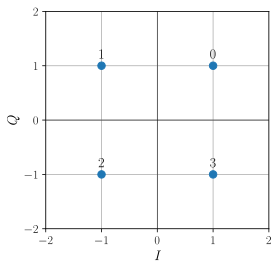

Modulation sur porteuse#
Une modulation sur porteuse permet de générer un signal dont la bande passante est presque entièrement incluse dans une bande de fréquence éloignée de 0 Hz.
Modulation#
Les modulations sur porteuse linéaires affectent à chaque symbole du message une forme d’onde \(h\) multipliée par une sinusoïde de fréquence \(f_p\) dont l’amplitude \(a_k\) et la phase \(\varphi_k\) dépendent du symbole \(k\) :
Ce signal est la partie réelle du signal complexe \(\bar{x}(t)\) :
où \(A_k = a_k \exp(j\varphi_k)\) est l’amplitude complexe de la modulation, qui peut se noter également sous forme cartésienne \(A_k = \alpha_k + j\beta_k\). On peut alors montrer que la modulation sur porteuse revient à deux modulations en bande de base multipliées par des porteuses sinusoïdales de même fréquence \(f_p\) en quadrature de phase :
Démonstration
En notant l’amplitude complexe sous la forme cartésienne \(A_k = \alpha_k + j\beta_k\), le signal complexe s’écrit :
Le signal \(x(t)\) est la partie réelle de \(\bar{x}(t)\) et vaut bien :
Pour réaliser une modulation sur porteuse, il faut donc définir trois types de quantités :
la fréquence de la porteuse \(f_p\), qui est choisie en fonction des contraintes liées à l’application (capacité à traverser les obstacles, capacités du matériel, normes, etc.) ;
la forme d’onde \(h(t)\), qui est le plus souvent la même que la forme d’onde de la modulation NRZ (soit une porte de durée \(d\)) ;
les amplitudes complexes \(A_k\), ou de manière équivalente les amplitudes réelles \(\alpha_k\) et \(\beta_k\), ou encore les modules \(a_k\) et les phases \(\varphi_k\). Il se trouve que les modulations sur porteuse sont très souvent utilisées dans le cas de signaux \(M\)-aires avec \(M\) grand. On préfère donc représenter les amplitudes \(A_k\) graphiquement (dans le plan complexe) plutôt que sous la forme d’un tableau qui pourrait être très long. Cette représentation graphique s’appelle une constellation : c’est un graphe 2D où chaque point correspond à un symbole dont les coordonnées sont les amplitudes \(\alpha_k\) et \(\beta_k\). Les axes sont donc nommés \(I\) (pour in-phase component) et \(Q\) (pour quadrature component).
Exemple
La modulation 4-QAM est une modulation 4-aire dont le tableau de correspondance est :
\(m_k\)
\(\alpha_k\)
\(\beta_k\)
\(a_k\)
\(\varphi_k\)
\(A_k\)
\(0\)
\(+1\)
\(+1\)
\(\sqrt{2}\)
\(\pi/4\)
\(1+j\)
\(1\)
\(-1\)
\(+1\)
\(\sqrt{2}\)
\(3\pi/4\)
\(-1+j\)
\(2\)
\(-1\)
\(-1\)
\(\sqrt{2}\)
\(-3\pi/4\)
\(-1-j\)
\(3\)
\(+1\)
\(-1\)
\(\sqrt{2}\)
\(-\pi/4\)
\(1-j\)
La constellation associée est la suivante :
Chaque point de la constellation correspond à une amplitude des composantes en phase et en quadrature, lesquelles sont directement reliées à l’énergie du signal. Par conséquent, l’énergie du signal est directement reliée au module des points de la constellation. En d’autres termes, plus l’espace occupé par la constellation est important, plus l’énergie nécessaire pour générer le signal modulé est importante.
{kind=link}
Modulation à déplacement d’amplitude#
Dans une modulation à déplacement d’amplitude (ASK pour amplitude shift keying), tous les symboles sont associés à une sinusoïde de même phase.
Ainsi, si \(\alpha_k\) varie et \(\beta_k=0\), alors chaque symbole est codé par un cosinus. À l’inverse, si \(\alpha_k=0\) et \(\beta_k\) varie, alors chaque symbole est codé par un sinus. En fait, toute constellation dont les points sont alignés sur une droite passant par l’origine est une modulation ASK (cela se vérifie en utilisant les règles de trigonométrie).
{kind=link}
{kind=link}
Modulation à déplacement de phase#
Dans une modulation à déplacement de phase (PSK pour phase shift keying), tous les symboles sont associés à une sinusoïde de même ampliltude, mais de phase différente.
Tous les points d’une constellation PSK sont répartis sur un cercle de centre l’origine. On peut le vérifier en utilisant la trigonométrie, mais aussi parce que l’amplitude complexe \(A_k\) peut s’écrire sous la forme \(a_k e^{j\varphi_k}\) où \(a_k\) est constant et \(\varphi_k\) varie.
{kind=link}
{kind=link}
Modulation d’amplitude en quadrature#
Lorsque le nombre de symboles \(M\) devient grand, les modulations ASK et PSK ne sont plus satisfaisantes pour utiliser efficacement l’énergie émise : elles occupent un espace trop important. En effet, si les points sont éloignés les uns des autres, alors l’énergie nécessaire pour fabriquer le signal augmente. À l’inverse, si les points sont trop rapprochés, alors il y a un risque de les confondre à la réception. Le mieux est donc de répartir les symboles dans une zone la plus compacte tout en espaçant le plus possible les points. On ne peut donc plus se retreindre à organiser les points sur une ligne (comme la modulation ASK) ou un cercle (comme la modulation PSK).
La modulation d’amplitude en quadrature (QAM pour quadrature amplitude modulation) répond de façon simple à cette question. La Fig. 44 donne quelques exemples de modulation QAM.
Fig. 44 Exemples de modulations QAM.#
Démodulation en présence de bruit#
On s’intéresse dans cette section à la réception d’un signal analogique lorsque le canal est bruité et de bande passante infinie. Le signal reçu est :
où \(b(t)\) et le bruit.
On rappelle que les modulations linéaires sur porteuse correspondent à deux modulations en bande de base multipliées par des sinusoïdes en quadrature de phase. La première étape de la démodulation consiste à supprimer les sinusoïdes, pour se retrouver ensuite dans le cas de deux démodulations en bande de base. Pour supprimer les sinusoïdes, on peut effectuer une démodulation cohérente en multipliant le signal reçu \(y\) par la porteuse.
Le signal \(w(t)\) contient une composante basse fréquence, une composante haute fréquence et du bruit. Un filtre passe-bas de fréquence de coupure égale à \(f_p\) permet d’éliminer les composantes hautes fréquences. En effet, ces composantes haute fréquence sont centrées autour de \(2f_p\). Le signal basse fréquence résultant est un signal en bande de base sur lequel on effectue une démodulation en bande de base (filtre adapté, échantillonnage, seuillage) pour obtenir les symboles associés aux amplitudes \(\alpha_k\).
Pour obtenir les symboles associés aux amplitudes \(\beta_k\), on procède de la même manière en multipliant le signal reçu par \(\sin(2\pi f_p t)\).
Pour terminer, notons que la démodulation cohérente nécessite de connaître parfaitement la fréquence et la phase de la porteuse, ce qui peut se faire avec une boucle à verrouillage de phase ou une détection d’enveloppe.